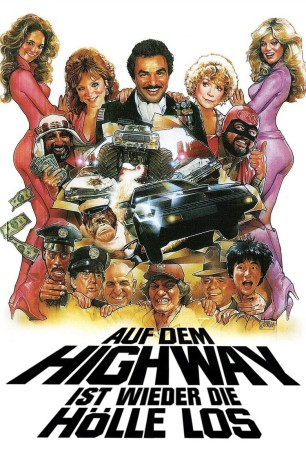
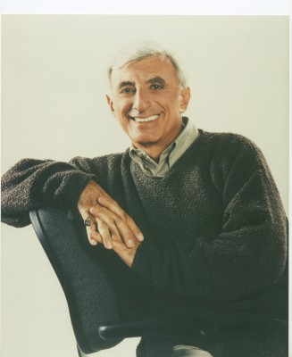

#6097 Auf dem Highway ist wieder die Hölle los
 
 IMDB-Wertung: 4.8 / 10
IMDB-Wertung: 4.8 / 10  Metascore: 0
Metascore: 0 
Fortsetzung des Films Auf dem Highway ist die Hölle los. Im zweiten Teil sponsort ein Scheich eine Million Dollar, die dem Sieger einer wilden Autorallye durch die USA winken. Doch als die Mafis davon Wind bekommt, entführen sie den Scheich kurzerhand. Mit Burt Reynolds in der Hauptrolle.
Jahr: 1984
Dauer: 109 Minuten
FSK:
Land: Hong-Kong Studio: Winkler FilmTonspuren: DD2.0 - ,
Untertitel: Deutsch,
Auflösung: 1080p (1920x1080) Größe: 6707 MB
Genre: Action, Komödie
Regisseur: Hal Needham
Drehbuch: Adam Sandler
Soundtrack:
Darsteller:
 Burt Reynolds als J.J. McClure
Burt Reynolds als J.J. McClure Frank Sinatra als Frank
Frank Sinatra als Frank-  Jamie Farr als The Sheik
 Dom DeLuise als Victor Prinzim / Captain Chaos / Don Canneloni
Dom DeLuise als Victor Prinzim / Captain Chaos / Don Canneloni- Dean Martin als Jamie Blake
- Sammy Davis Jr. als Morris Fenderbaum
- Marilu Henner als Betty
 Telly Savalas als Hymie Kaplan
Telly Savalas als Hymie Kaplan Shirley MacLaine als Veronica
Shirley MacLaine als Veronica- Susan Anton als Jill, Lamborghini Babe
- Catherine Bach als Marcie, Lamborghini Babe
- Foster Brooks als Fisherman #1
 Sid Caesar als Fisherman #2
Sid Caesar als Fisherman #2- Louis Nye als Fisherman #3
 Jackie Chan als Jackie Chan, Mitsubishi Engineer
Jackie Chan als Jackie Chan, Mitsubishi Engineer Tim Conway als CHP Officer #1
Tim Conway als CHP Officer #1 Don Knotts als CHP Officer #2
Don Knotts als CHP Officer #2- Fred Dryer als Sergeant in CHP Car
- Tony Danza als Terry
 Jack Elam als Doctor Nikolas Van Helsing
Jack Elam als Doctor Nikolas Van Helsing Michael V. Gazzo als Sonny
Michael V. Gazzo als Sonny Richard Kiel als Arnold, Mitsubishi Driver
Richard Kiel als Arnold, Mitsubishi Driver Ricardo Montalban als King
Ricardo Montalban als King- Jim Nabors als Pvt. Homer Lyle
- Molly Picon als Mrs. Goldfarb
- Charles Nelson Reilly als Don Don Canneloni
 Alex Rocco als Tony
Alex Rocco als Tony Henry Silva als Slim
Henry Silva als Slim- Joe Theismann als Mack
- Mel Tillis als Mel
- Abe Vigoda als Caesar
- Arte Johnson als Pilot
- Lydia Lei als Beautiful Girl
- Chris Lemmon als Young CHP Officer
- George Lindsey als Uncle Cal
- Doug McClure als The Slapper
 Dub Taylor als Sheriff
Dub Taylor als Sheriff- Jack Smith als Announcer Jack Smith
- Shawn Weatherly als Blake's Girl in Bed
 Frank Welker als Special Vocal Effects
Frank Welker als Special Vocal Effects- Marty Allen als (uncredited
- Steve Dressler als Co-Pilot , uncredited
 Cheech Marin als Tire Store Employee , uncredited
Cheech Marin als Tire Store Employee , uncredited Hal Needham als Porsche 928 Driver with Cowboy Hat , uncredited
Hal Needham als Porsche 928 Driver with Cowboy Hat , uncredited- Manis the Orangutan als Monkey , uncredited
 Branscombe Richmond als Biker , uncredited
Branscombe Richmond als Biker , uncredited- Avery Schreiber als (uncredited
- Sean Stanek als Gas Station Attendant , uncredited
- Jilly Rizzo als Jilly
- Lee Kolima als Nicky
Datei: X:\2-Dilogie(A-F)\Auf dem Highway\Auf dem Highway ist wieder die Hölle los (1984, FSK, 1920x1080).mkv seit 01.05.2017
Festplatte: HD Collection-2(A-Z)-3(A-M)
 Alle Filme aus Gruppe '2-Dilogie(A-F)\Auf dem Highway'
Alle Filme aus Gruppe '2-Dilogie(A-F)\Auf dem Highway'